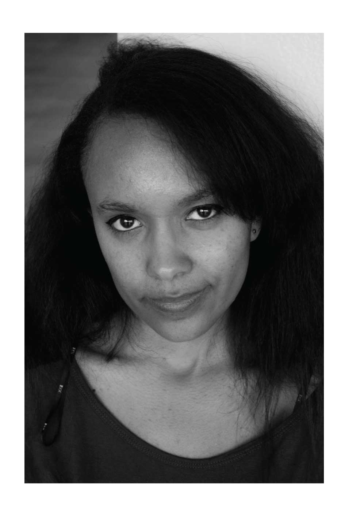
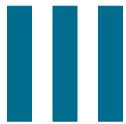

  <main>

    <div class="grid pad-t-2 gutter">

      <div class="img unit [ xs-1 s-1 m-1-2 l-1-2 ] unit-push-m-1-2 center">
        
      </div>

      <div class="content gutter-half unit [ xs-1 s-1 m-1-2 l-1-2 unit-pull-m-1-2 ]">

        <input type="checkbox" class="nav-check hide-custom-input" id="nav-check">
        <!-- This is the button we’d click to open/close the navigation -->
        <label class="nav-label" for="nav-check">
          
          
        </label>
        <nav class="nav-toggle pin-t">
          <ul class="push-0">
            <li><a href="{{site.baseurl}}/illustration.html">Illustration</a></li>
            <li><a href="{{site.baseurl}}/applications.html">Applications</a></li>
            <li><a href="{{site.baseurl}}/motion.html">Motion</a></li>
            <li><a href="{{site.baseurl}}/mixed-media.html">Mixed Media</a></li>
            <li><a href="{{site.baseurl}}/branding.html">Branding</a></li>
          </ul>
        </nav>

          <div class="nav unit xs-1 s-1 m-2-3 l-2-3 pad-top-half pad-bottom-half side-nav">
            <nav>
              <ul class="push-none list-group text-left giga pad-t-3">
                <li class="exa"><a href="{{site.baseurl}}/illustration.html">Illustration</a></li>
                <li class="exa"><a href="{{site.baseurl}}/applications.html">Applications</a></li>
                <li class="exa"><a href="{{site.baseurl}}/motion.html">Motion</a></li>
                <li class="exa"><a href="{{site.baseurl}}/mixed-media.html">Mixed Media</a></li>
                <li class="exa"><a href="{{site.baseurl}}/branding.html">Branding</a></li>
              </ul>
            </nav>
          </div>

        </div>

      </div>

  </main>
